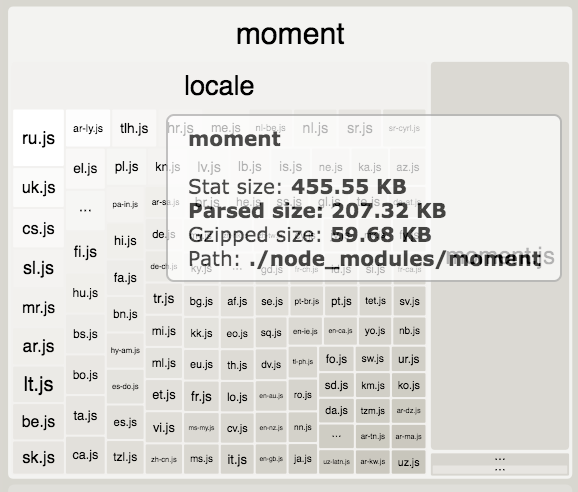

It's about Time !


Le temps ?
Nycthémère
Jour, année, mois
- 3000 av JC, Mésopotamie : 12 mois de 30 jours + 1 mois d'ajustement
- 2000 av JC, Egypte : Calendrier solaire avec 365 jours
Heure, minute
- -1350, Egypte : Clepsydre, 12h par jour et par nuit
- -500 : Heure temporaire

- 1300 : Heure equinoxiale
Seconde
- 1889 : Conférence générale des poids et des mesures - 1/86400 du jour solaire moyen
- 1967 : Unité SI - 9 192 631 770 périodes de la radiation correspondant à la transition entre les deux niveaux hyperfins de l’état fondamental de l’atome de césium 133
Calendrier
Adoption du calendrier Grégorien proleptique
- Calendrier julien : 365,25 j => décalage de 10j
- Calendrier grégorien : nouvelle definition année bissextile
- Le 4 octobre 1582 suivit par le 15 octobre 1582
Mais ...
- tous les pays n'ont pas changé en même temps
- La France en décembre 1582
- La Grande-Bretagne et ses possessions en 1752
Quelle heure est-il ?
Heure au 19e siècle
-
Les grandes villes ont leur propre heure equinoxiale.
Ex: Rennes avait un décalage de 17 minutes avec Paris - Le développement du chemin de fer nécessite une uniformisation du temps
- 1891 : la France adopte l'heure de Paris.
Heure en France, la suite
- 1911 - Heure GMT-9min21s
- 1923 - GMT + heure d'été
- 1940 - Sous l'Occupation GMT+1
- 1945 - Libération GMT+1
- 1976 - Choc pétrolier, heure d'été
TAI, UTC, Unix Time
- Temps Atomique Universel, défini en 1967, mesure stricte du temps
- UTC - Temps Universel Coordonné, comme le TAI mais avec les secondes intercalaires
- Unix Time, Epoch , POSIX Time
Nombre de secondes écoulées depuis le 1er janvier 1970 à 00:00:00 UTC avec les secondes intercalaires
| TAI | UTC | Unix |
| 2017-01-01 00:00:35 | 2016-12-31 23:59:59 | 1483228799 |
| 2017-01-01 00:00:36 | 2016-12-31 23:59:60 | 1483228800 |
| 2017-01-01 00:00:37 | 2017-01-01 00:00:00 | 1483228800 |

Indiana
Heure d'été
Daylight Saving Time
- Tous les pays ne la suivent pas.
- Les pays qui la suivent ne changent pas tous en même temps.
- Un pays qui suit le DST peut décider de ne plus le suivre.
- Des régions peuvent décider de ne pas suivre le pays sur le DST.

Régions observant l'heure d'été
Régions ayant un certain temps observé l'heure d'été
Régions n'ayant jamais observé l'heure d'été
tz database
- consigne tous les changements
- domaine public
- maintenue par une personne à l'ICANN / IANA
Norme ISO 8601
- Date : 2020-03-02T14:20:00+0100 ou 2020-03-02T13:20:00Z
- Intervalle : 2020-03-02T14:00/30
- Durée : PT4M35S
UTC+7 - Java
Depuis Java 1.1
- java.util.Date, java.sql.Date
- java.util.Calendar
- java.text.SimpleDateFormat
import java.util.Calendar;
import java.util.Date;
// Date init
Calendar cal = Calendar.getInstance();
cal.set(2020, 11, 1);
Date maybeFirstNovember = cal.getTime();
// maybeFirstNovember: Tue Dec 01 21:31:53 CET 2020
// Date manipulation
cal.setTime(maybeFirstNovember);
cal.add(Calendar.DATE, 24);
Date xmas = cal.getTime();
// xmas: Fri Dec 25 21:31:53 CET 2020
// Mutable
maybeFirstNovember.setDate(25);
// maybeFirstNovember: Fri Dec 25 21:31:53 CET 2020
import java.text.ParseException;
import java.text.SimpleDateFormat;
public class DateCalendarUtils {
private static SimpleDateFormat sdf =
new SimpleDateFormat("yyyy-MM-dd");
public String parse(String string) {
try {
return sdf.parse(string).toString();
} catch (ParseException e) {
e.printStackTrace();
return "error";
}
}
}
Ne plus utiliser java.util.Date et autres
- API incompréhensible
- Date mutable
- SimpleDateFormat et Calendar non thread-safe
- Timestamp pas unique

Joda Time
- Créé par Stephen Coleman
- Recommandé pour tout code Java < 8
- Désormais en maintenance.
Java 8 - Date/Time API
- JSR 310
- Formatage et manipulation, quasi la même API que Joda Time
- Java Time Scale : 1s = 1 jour calendaire / 86400
différent de 1s SI
- LocalDate, LocalDateTime, LocalTime : date du calendrier (ex: anniversaire)
- Instant : point précis dans le temps (mesuré en s et ns depuis Epoch avec Jave Time Scale)
- Duration : durée, quantité de temps en s et ns
- Pour la sauvegarde en BDD, utiliser OffsetDateTime ou Instant
- Faire une classe utilitaire exclusivement dédiée aux dates
- ZoneRules est basé sur tz database, MAJ à chaque version
Comment fixer une Date dans ses tests
import java.time.Clock;
import java.time.LocalDateTime;
public class Java8Time {
private Clock clock;
public Java8Time(Clock clock) {
this.clock = clock;
}
public LocalDateTime now() {
return LocalDateTime.now(clock);
}
}
import java.time.Clock;
import java.time.Instant;
import java.time.ZoneId;
private Java8Time sut;
@BeforeEach
void setUp() {
// Fix the time !
Clock clock =Clock.fixed(
Instant.parse("2020-03-02T14:30:00Z"),
ZoneId.of("Europe/Paris")
);
sut = new Java8Time(clock);
}
Moment.js
Taille
Moment mutable
import * as mt from 'moment';
const m1 = mt();
// Bad
const m2 = m1.subtract(3, 'months');
// Good
const m2 = mt(m1).subtract(3, 'months');
Alternatives
A choisir en fonction de ses besoins de rapidité, de formatage, de manipulation de date et de compatibilité browsers- Luxon
- date-fns
- day.js
- Intl
- Il y a toujours 24h dans une journée.
- Un timestamp Unix permet de s'assurer de l'unicité.
- Je peux manipuler des dates locales sans soucis vu que mon application n'est utilisée qu'en France.
- Il n'a jamais eu de 30 février.
- Le 35 Mai n'existe pas
- Les années non-bissextiles ne peuvent pas avoir de jour en plus.
- C'est pas grave d'utiliser java.util.Date, ça fait le boulot.
- À tout moment sur Terre, il n'y a qu'une ou deux dates en même temps.
- Le temps, c'est pas compliqué.
- Je porte des chaussettes ü¶ì
Sources
- Falsehoods programmers believe about time - Noah Sussman http://FalsehoodsAboutTime.com
- UTC is enough for everyone, right ? - Zach Holman https://zachholman.com/talk/utc-is-enough-for-everyone-right
- https://www.timeanddate.com/
- Wikipedia
- JavaDoc